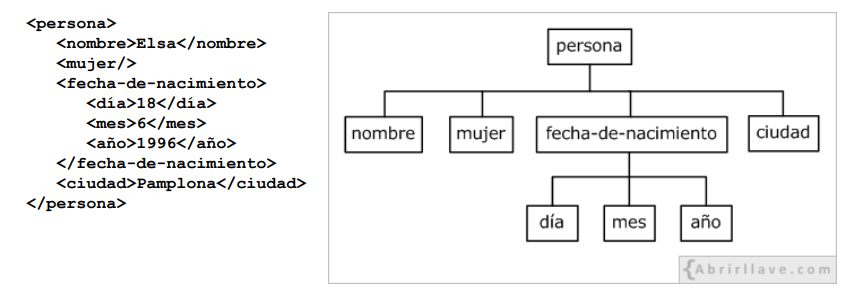

Chuleta XML
¿Qué es XML?
- XML (eXtended Markup Language)
- Desarrollado por W3C (World Wide Web Consortium)
- Basado en SGML (Standard Generalized Markup Language)
- Utilizado para el almacenamientoe intercambio de datos estructurados entre distintas plataformas
- ES un metalenguaje empleado para definir otros lenguajes (dialectos XML): GML, MathML, RSS, SVG, XHTML, etc.
Elementos
- Un documento XML está formado por texto plano (sin formato) y contiene marcas (etiquetas) definidas por el desarrollador
- Sintaxis: <etiqueta> - valor - </etiqueta>
- Elementos vacíos: <etiqueta > - </etiqueta> o <etiqueta/>
- Un elemento (padre) puede contener a otros elementos (hijos)
- Todo documento XML tiene que tener un único elemento raíz (padre) del que descienden todos los demás

- La estructura de cualquier documento XML se puede representar como un árbol invertido de elementos
- Los elementos son los que dan estructura semántica al documento
- Un elemento puede contener contenido mixto, es decir, texto y otros elementos
Normas de sintaxis básicas
- Todos los nombres de elementos son case sensitive, es decir, sensible a letras minúsculas y mayúsculas
- Pueden contener letras minúsculas, letras mayúsculas, números, puntos ".", guiones medios "-", y guiones bajos "_"
- Asimismo, pueden contener el caracter dos puntos ":". Pero, su uso se reserva para definir espacios de nombres
- El primer caracter tiene que ser una letra o un guión bajo "_"
- Detrás del nombre de una etiqueta se permite escribir un espacioen blanco o un salto de línea
- No puede haber un salto de línea o un espacio en blanco antes del nombre de una etiqueta
- Las letras no inglesas (á, Á, ñ, Ñ, ...) están permitidas. Pero, al igual que el carácter guión medio "-" y el
punto ".", se recomienda no utilizarlos para reducir posibles imcompatibilidades o errores en programas que no
los interpreten bien.
Atributos
- Un atributo sirve para proporcionarinformación extra sobre el elemento que lo contiene
- Los nombres de los atributos deben cumplir las mismas normas de sintaxis que los nombres de los elementos
- Todos los atributos de un elemento tienen que ser únicos
- Los atributos contenidos en un elemento, deben separarse con espacios en blanco, no siendo significativo su orden
Declaración XML
- Sintaxís: <?xml version="1.0" encoding="UTF-8" standalone="yes" ?>
- La declaración XML no es una instrucción de procesamiento (o proceso)
- Escribir la declaración XML es opcional. Pero, si se escribe, el atributo version es obligatorio indicarlo.
Sin embargo, los atributos encoding y standalone son opcionales y, por defecto, sus
valores son "UTF-8" y "no", respectivamente
- standalone="yes" indica que el documentoes independiente de otros
- Cuando se escribe el atributo encoding, siempre deberá aparecer despues de version. Y, respecto
al atributo standalone, siempre que escriba, deberá ser en último lugar.
- Si se incluye la declaración XML, tiene que apareceren la primera línea del documento, y el caracter "<" debe se el
primero de dicha línea, es decir, antes no pueden aparecer espacios en blanco
Instrucciones de procesamiento
- Una instruccion de procesamiento sirve para indicar cierta información al programa que procese dicho documento
- Ejemplo: <?xml-stylesheet type="text/css" href="estilo-animales.css"?>
- En un documento XML, no es obligatorio que aparezcan instrucciones de procesamiento
Referencias a entidades
| < menor que |
lt less than |
< |
| > mayor que |
gt greater than |
> |
| " comilla doble |
quot quotation mark |
" |
| ' comilla simple |
apos apostrophe |
' |
| & ampersand |
amp ampersand |
& |
- El caracter menor que "<" es problemático porque indica el comienzo de una etiqueta
- El caracter ampersand "&" es problematico, ya que, se utiliza para indicar el comienzo de una referencia a entidad
- Uso de la comilla doble (") y de la comilla simple (')en atributos:
<dato caracter=" comilla doble (")" /> <dato caracter=' comilla simple (')'/>
- Los valores de atributos escritos entre comillas dobles(") si pueden contener al caracter comilla simple (') ya la inversa
<dato caracter="comilla simple(')" / > <dato caracter='comilla doble("")'' / >
Referencia de caracteres
- Se pueden escribir referencias de caracteres Unicodde con los símbolos &#, seguidos del valor decimal o
hexadecimal del carácter Unicode que se quiera representar y, finalmente, añadiendo el carácter punto y coma ";"
- Ejemplo: El símbolo del Euro (€) puede escribirse € o €
Comentarios
<!-- esto es un comentario escrito en un documento XML -->
- No se pueden escribir comentarios dentro de las etiquetas: < mujer <!-- elemento vacío --> />
- En los comentarios no está permitido usar dos guiones seguidos.No es posible anidar comentarios en un documento XML
<!-- Dos guiones seguidos -- en un comentario da error -->
Secciones CDATA
- Un documento XML puede contener secciones CDATA para escribir texto que no se desea que sea analizado
- Una sección CDATA se escribe comenzando con la cadena "<![CDATA][" y termina con los
caracteres "]]>"
- Dentro de una sección CDATAno se puede escribir la cadena "]]>". Por tanto, no se puden anidar secciones CDATA
- No está permitido escribir espaciosen blanco o saltos de línea en las cadenas de inicio "<![CDATA]" o fin
"]]>"
Espacios de nombres
- Sintaxis para definir un espacio de nombres: xmlns:prefijo="URI"
- Los URI especificados en un documento XML no tienen porqué contener nada, su función es ser únicos. Ejemplos:
//www.abrirllave.com/ejemplo1 http://www.w3.org/1999/xhtml/
- Los espacios de nombres pueden definirse en el elemento raíz o, directamente, en los elementos que los vayan a utilizar.
- En un documento XML es posible definir todos los espacios de nombres que se necesiten, pudiéndose mezclar –si fuese
necesario– los elementos de dichos espacios de nombres.
- Se puede definir un espacio de nombres por defecto mediante la siguiente sintaxis: xmlns="URI"
- En un documento XML, para indicar que determinados elementos –o todos– no pertenecen a ningún espacio de nombres,
se escribe el atributo xmlns vacío, es decir,xmlns="" .
Espacios en blanco
- Los espacios en blanco, las tabulaciones y los retornos de carro pueden ser tratados de un modo especial.
- Los elementos pueden contener el atributo predefinido xml:space con el valor "preserve" para indicar que los
espacios que aparecen en el contenido (texto) de dicho elemento, y sus sucesores, deben ser preservados.
- Los únicos valores que admite el atributo xml:space son "preserve" y "default" , siendo este último su valor por
defecto cuando no se escribe dicho atributo.
- "default" indica que la aplicación que haga uso del documento XML se encarga de decidir cómo tratar los espacios en
blanco. Ahora bien, aún con "preserve", hay que tener en cuenta que no todos los programas reconocen este atributo
Documentos XML bien formados y válidos
- Un documento XML está bien formado cuando no tiene errores de sintaxis.
- Un documento XML es válido cuando, además de no tener errores de sintaxis, no incumple ninguna de las normas
establecidas en su estructura (DTD, XML Schema, RELAX NG...).